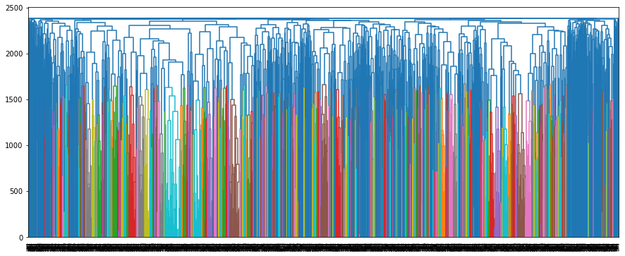

Clustering with Text#
OBJECTIVES:
Use clustering on text data to surface similar texts.
Use different distance metrics to determine clusters.
Understand partitive clustering on text
Augment
sklearnclustering algorithms to fit in pipeline
Problem: What Constitutes Similarity?#
from sklearn.cluster import KMeans
from sklearn.preprocessing import StandardScaler
from sklearn.pipeline import make_pipeline
from sklearn.base import BaseEstimator, TransformerMixin
import numpy as np
import pandas as pd
import matplotlib.pyplot as plt
#custom class for pipeline
class KMCluster(BaseEstimator, TransformerMixin):
#what happens when instantiated --
#when instantianted we will create a KMeans object with 4 centers
def __init__(self, k = 4):
self.k = k
self.model = KMeans(n_clusters= self.k, random_state = 22)
#placeholder for sklearn consistency
def fit(self, documents, labels = None):
return self
#where the action happens and we cluster our documents
def transform(self, documents):
return self.model.fit_predict(documents)
kmeans = KMCluster()
#use newsgroups data
from sklearn.datasets import fetch_20newsgroups
news = fetch_20newsgroups(categories = ['rec.sport.baseball', 'rec.sport.hockey', 'rec.motorcycles', 'rec.autos'])
#X = ...
X = news.data
#instantiate
kmeans = KMCluster()
#fit it
kmeans.fit(X)
KMCluster()In a Jupyter environment, please rerun this cell to show the HTML representation or trust the notebook.
On GitHub, the HTML representation is unable to render, please try loading this page with nbviewer.org.
KMCluster()
#get labels with .transform()
kmeans.transform(X)
---------------------------------------------------------------------------
ValueError Traceback (most recent call last)
Cell In[9], line 2
1 #get labels with .transform()
----> 2 kmeans.transform(X)
File /Library/Frameworks/Python.framework/Versions/3.12/lib/python3.12/site-packages/sklearn/utils/_set_output.py:316, in _wrap_method_output.<locals>.wrapped(self, X, *args, **kwargs)
314 @wraps(f)
315 def wrapped(self, X, *args, **kwargs):
--> 316 data_to_wrap = f(self, X, *args, **kwargs)
317 if isinstance(data_to_wrap, tuple):
318 # only wrap the first output for cross decomposition
319 return_tuple = (
320 _wrap_data_with_container(method, data_to_wrap[0], X, self),
321 *data_to_wrap[1:],
322 )
Cell In[2], line 13, in KMCluster.transform(self, documents)
12 def transform(self, documents):
---> 13 return self.model.fit_predict(documents)
File /Library/Frameworks/Python.framework/Versions/3.12/lib/python3.12/site-packages/sklearn/cluster/_kmeans.py:1070, in _BaseKMeans.fit_predict(self, X, y, sample_weight)
1047 def fit_predict(self, X, y=None, sample_weight=None):
1048 """Compute cluster centers and predict cluster index for each sample.
1049
1050 Convenience method; equivalent to calling fit(X) followed by
(...)
1068 Index of the cluster each sample belongs to.
1069 """
-> 1070 return self.fit(X, sample_weight=sample_weight).labels_
File /Library/Frameworks/Python.framework/Versions/3.12/lib/python3.12/site-packages/sklearn/base.py:1473, in _fit_context.<locals>.decorator.<locals>.wrapper(estimator, *args, **kwargs)
1466 estimator._validate_params()
1468 with config_context(
1469 skip_parameter_validation=(
1470 prefer_skip_nested_validation or global_skip_validation
1471 )
1472 ):
-> 1473 return fit_method(estimator, *args, **kwargs)
File /Library/Frameworks/Python.framework/Versions/3.12/lib/python3.12/site-packages/sklearn/cluster/_kmeans.py:1464, in KMeans.fit(self, X, y, sample_weight)
1436 @_fit_context(prefer_skip_nested_validation=True)
1437 def fit(self, X, y=None, sample_weight=None):
1438 """Compute k-means clustering.
1439
1440 Parameters
(...)
1462 Fitted estimator.
1463 """
-> 1464 X = self._validate_data(
1465 X,
1466 accept_sparse="csr",
1467 dtype=[np.float64, np.float32],
1468 order="C",
1469 copy=self.copy_x,
1470 accept_large_sparse=False,
1471 )
1473 self._check_params_vs_input(X)
1475 random_state = check_random_state(self.random_state)
File /Library/Frameworks/Python.framework/Versions/3.12/lib/python3.12/site-packages/sklearn/base.py:633, in BaseEstimator._validate_data(self, X, y, reset, validate_separately, cast_to_ndarray, **check_params)
631 out = X, y
632 elif not no_val_X and no_val_y:
--> 633 out = check_array(X, input_name="X", **check_params)
634 elif no_val_X and not no_val_y:
635 out = _check_y(y, **check_params)
File /Library/Frameworks/Python.framework/Versions/3.12/lib/python3.12/site-packages/sklearn/utils/validation.py:1012, in check_array(array, accept_sparse, accept_large_sparse, dtype, order, copy, force_writeable, force_all_finite, ensure_2d, allow_nd, ensure_min_samples, ensure_min_features, estimator, input_name)
1010 array = xp.astype(array, dtype, copy=False)
1011 else:
-> 1012 array = _asarray_with_order(array, order=order, dtype=dtype, xp=xp)
1013 except ComplexWarning as complex_warning:
1014 raise ValueError(
1015 "Complex data not supported\n{}\n".format(array)
1016 ) from complex_warning
File /Library/Frameworks/Python.framework/Versions/3.12/lib/python3.12/site-packages/sklearn/utils/_array_api.py:745, in _asarray_with_order(array, dtype, order, copy, xp, device)
743 array = numpy.array(array, order=order, dtype=dtype)
744 else:
--> 745 array = numpy.asarray(array, order=order, dtype=dtype)
747 # At this point array is a NumPy ndarray. We convert it to an array
748 # container that is consistent with the input's namespace.
749 return xp.asarray(array)
ValueError: could not convert string to float: 'From: swdwan@napier.uwaterloo.ca (Donald Wan)\nSubject: $ 80 SVX OIL CHANGE\n \nOrganization: University of Waterloo\nLines: 17\n\n\n\n\n\n My friend brought a subaru SVX recently. I had drove it for couples times and I\nthink its a great car, esp on snow. However when she took it to a local Subaru\ndealer for a oil change, the bill came out to be about 80 dollars. The dealer\ntold us it is because to change the oil filter on a SVX it is necessary to\ndisassemble a metal cover under the engine and that took an hour of labour.\nAt first, we think we are being ripped off so she phone to a dealer in Toronto\nbut found out the they are charging roughly the same price. So is there any\nSVX owner out there that has the same problem ? And if the oil change story is\ntrue, then the engineer of Subaru looks pretty stubid to me. By the way, the car\nlooks great.\n\nSWD Wan.\n\n'
print(X[0])
From: swdwan@napier.uwaterloo.ca (Donald Wan)
Subject: $ 80 SVX OIL CHANGE
Organization: University of Waterloo
Lines: 17
My friend brought a subaru SVX recently. I had drove it for couples times and I
think its a great car, esp on snow. However when she took it to a local Subaru
dealer for a oil change, the bill came out to be about 80 dollars. The dealer
told us it is because to change the oil filter on a SVX it is necessary to
disassemble a metal cover under the engine and that took an hour of labour.
At first, we think we are being ripped off so she phone to a dealer in Toronto
but found out the they are charging roughly the same price. So is there any
SVX owner out there that has the same problem ? And if the oil change story is
true, then the engineer of Subaru looks pretty stubid to me. By the way, the car
looks great.
SWD Wan.
Using a Pipeline#
Now, we get our KMClusters in a pipeline that vectorizes the texts and passes through the clusterer.
#bring in pipeline and vectorizer
from sklearn.pipeline import make_pipeline
from sklearn.feature_extraction.text import CountVectorizer, TfidfVectorizer
#make the pipeline
kmeans_pipe = make_pipeline(CountVectorizer(stop_words='english', max_features = 500),
StandardScaler(with_mean = False), KMCluster())
#fit the pipe
kmeans_pipe.fit(X)
Pipeline(steps=[('countvectorizer',
CountVectorizer(max_features=500, stop_words='english')),
('standardscaler', StandardScaler(with_mean=False)),
('kmcluster', KMCluster())])
#get the labels
labels = kmeans_pipe.transform(X)
#look at the class representation
x, y = np.unique(labels, return_counts=True)
plt.bar(x, y)
<BarContainer object of 4 artists>
The NLTK Cluster Module#
Advantages: Here we can make use of the cosine_distance which can be more effective for clustering texts.
#import the clusterer and distance metric
from nltk.cluster import KMeansClusterer, cosine_distance
#write our new clustom nltk class
class NLTKClusterer(BaseEstimator, TransformerMixin):
def __init__(self, k = 4):
self.k = k
self.distance = cosine_distance
self.model = KMeansClusterer(num_means = self.k, distance = self.distance,
avoid_empty_clusters=True)
def fit(self, documents, labels = None):
return self
def transform(self, documents):
return self.model.cluster(documents.toarray(), assign_clusters = True)
#new pipe
nltk_pipe = make_pipeline(CountVectorizer(max_features=500, stop_words='english'),
NLTKClusterer())
#fit it
nltk_pipe.fit(X)
Pipeline(steps=[('countvectorizer',
CountVectorizer(max_features=500, stop_words='english')),
('nltkclusterer', NLTKClusterer())])
#extract labels
nltk_labels = nltk_pipe.transform(X)
#plot the results
cluster, nltk_counts = np.unique(nltk_labels, return_counts=True)
plt.bar(cluster, nltk_counts)
<BarContainer object of 4 artists>
#there is a subject line
X[0].split('\n')[1]
'Subject: $ 80 SVX OIL CHANGE'
#make a news dataframe
newsdf = pd.DataFrame(X)
newsdf.head()
| 0 | |
|---|---|
| 0 | From: swdwan@napier.uwaterloo.ca (Donald Wan)\... |
| 1 | From: etxonss@ufsa.ericsson.se (Staffan Axelss... |
| 2 | From: larry@boris.webo.dg.com (Larry Rogers)\n... |
| 3 | From: sepinwal@mail.sas.upenn.edu (Alan Sepinw... |
| 4 | From: napoli@strobe.ATC.Olivetti.Com (Gaetano ... |
#add column label
newsdf.columns = ['text']
#add label column
newsdf['labels'] = nltk_labels
#make a function to grab subjects
newsdf.head()
| text | labels | |
|---|---|---|
| 0 | From: swdwan@napier.uwaterloo.ca (Donald Wan)\... | 2 |
| 1 | From: etxonss@ufsa.ericsson.se (Staffan Axelss... | 1 |
| 2 | From: larry@boris.webo.dg.com (Larry Rogers)\n... | 2 |
| 3 | From: sepinwal@mail.sas.upenn.edu (Alan Sepinw... | 3 |
| 4 | From: napoli@strobe.ATC.Olivetti.Com (Gaetano ... | 2 |
#extract subjects as new column
#group by the labels
newsdf.groupby('labels').head(2).values
array([['From: swdwan@napier.uwaterloo.ca (Donald Wan)\nSubject: $ 80 SVX OIL CHANGE\n \nOrganization: University of Waterloo\nLines: 17\n\n\n\n\n\n My friend brought a subaru SVX recently. I had drove it for couples times and I\nthink its a great car, esp on snow. However when she took it to a local Subaru\ndealer for a oil change, the bill came out to be about 80 dollars. The dealer\ntold us it is because to change the oil filter on a SVX it is necessary to\ndisassemble a metal cover under the engine and that took an hour of labour.\nAt first, we think we are being ripped off so she phone to a dealer in Toronto\nbut found out the they are charging roughly the same price. So is there any\nSVX owner out there that has the same problem ? And if the oil change story is\ntrue, then the engineer of Subaru looks pretty stubid to me. By the way, the car\nlooks great.\n\nSWD Wan.\n\n',
2],
['From: etxonss@ufsa.ericsson.se (Staffan Axelsson)\nSubject: NHL Swedes: Stats, April 5\nOrganization: Ericsson Telecom, Stockholm, Sweden\nLines: 141\nNntp-Posting-Host: uipc104.ericsson.se\n\n\n Scoring stats for the Swedish NHL players, April 5:\n ===================================================\n\n Mats Sundin watch:\n\n Most points during a season:\n \n 131 Kent Nilsson, Calgary Flames 1980-81 (49+82)\n 110 Mats Naslund, Montreal Canadiens 1985-86 (43+67)\n * 109 Mats Sundin, Quebec Nordiques 1992-93 (43+66)\n 106 Hakan Loob, Calgary Flames 1987-88 (50+56)\n 104 Kent Nilsson, Calgary Flames 1982-83 (46+58)\n 99 Kent Nilsson, Calgary Flames 1984-85 (37+62)\n\n Most goals during a season:\n\n 50 Hakan Loob, Calgary Flames 1987-88\n 49 Kent Nilsson, Calgary Flames 1980-81\n 46 Kent Nilsson, Calgary Flames 1982-83\n 45 Tomas Sandstrom, LA Kings 1990-91\n 43 Mats Naslund, Montreal Canadiens 1985-86\n * 43 Mats Sundin, Quebec Nordiques 1992-93\n\n Most assists during a season:\n\n 82 Kent Nilsson, Calgary Flames 1980-81\n 67 Mats Naslund, Montreal Canadiens 1985-86\n 66 Borje Salming, Toronto Maple Leafs 1976-77\n * 66 Mats Sundin, Quebec Nordiques 1992-93\n 62 Kent Nilsson, Calgary Flames 1984-85\n 61 Borje Salming, Toronto Maple Leafs 1977-78\n 61 Thomas Steen, Winnipeg Jets 1988-89\n\n Ulf Samuelsson watch:\n\n Most penalty minutes during a season:\n\n * 243 Ulf Samuelsson, Pittsburgh Penguins 1992-93 (through 3/25)\n 211 Ulf Samuelsson, Pittsburgh Penguins 1990-91\n 206 Ulf Samuelsson, Pittsburgh Penguins 1991-92\n 184 Kjell Samuelsson, Philadelphia Flyers 1988-89\n 181 Ulf Samuelsson, Hartford Whalers 1988-89\n 174 Ulf Samuelsson, Hartford Whalers 1985-86\n 170 Borje Salming, Toronto Maple Leafs 1980-81\n \n-------------------------------------------------------------------------------\n\nRL Rk Name Team J# Ps Ht Wt Born G A Pts PL Comment\n-- -- ---------------- ---- -- -- --- --- -------- -- -- --- -- -------\n 1 Mats Sundin QUE 13 C 6-2 189 2/13/71 43 66 109 7 \n 2 Ulf Dahlen MIN 22 RW 6-2 195 1/12/67 33 38 71 5 \n 3 Thomas Steen WIN 25 C 5-10 195 6/ 8/60 21 43 64 5\n 4 Johan Garpenlov SJS 10 LW 5-11 185 3/21/68 21 40 61 5 \n 5 Fredrik Olausson WIN 4 D 6-2 200 10/ 5/66 13 38 51 4\n 6 Tomas Sandstrom LAK 7 LW 6-2 207 9/ 4/64 22 24 46 2\n 7 Per-Erik Eklund PHI 9 LW 5-10 175 3/22/63 8 34 42 Injured\n 8 Calle Johansson WAS 6 D 5-11 205 2/14/67 6 35 41 1\n 9 Nicklas Lidstrom DET 5 D 6-2 180 4/28/70 7 33 40 2 \n 10 Tommy Sjodin MIN 33 D 5-11 190 8/13/65 7 29 36 \n 11 Ulf Samuelsson PIT 5 D 6-1 195 3/26/64 2 24 26 1 \n 12 Mikael Andersson TBL 34 LW 5-11 185 5/10/66 13 11 24 1 \n 13 Michael Nylander HFD 36 LW 5-11 176 10/ 3/72 5 16 21 2 \n 14 Roger Johansson CGY 34 D 6-1 185 4/ 7/67 4 15 19 1\n 15 Jan Erixon NYR 20 LW 6-0 196 7/ 8/62 5 10 15 \n 16 Peter Andersson NYR 25 D 6-0 187 8/29/65 4 7 11 1 \n 17 Kjell Samuelsson PIT 28 D 6-6 235 10/18/58 3 6 9 2 \n 18 Tommy Albelin NJD 6 D 6-1 190 5/21/64 1 5 6 \n 19 Per Djoos NYR 44 D 5-11 176 5/11/68 1 1 2 Binghampton?\n 20 Niclas Andersson QUE 46 LW 5-8 169 5/20/71 0 1 1 Halifax\n 21 Thomas Forslund CGY 27 LW 6-0 185 11/24/68 0 1 1 Salt Lake\n 22 Patrik Carnback MON 20 LW 6-0 189 2/ 1/68 0 0 0 Injured\n 23 Patrik Kjellberg MON 27 LW 6-2 196 6/17/69 0 0 0 Fredericton\n\n-------------------------------------------------------------------------------\nRL=Rank Last week, Rk=Rank, J#=Jersey Number, Ps=Position, Born (mm/dd/yy)\nG=Goals, A=Assists, Pts=Points, PL=Points scored since Last posted list\n===============================================================================\n\n Goalie stats:\n\n Name Team J# Ps Ht Wt Born \n ---------------- ---- -- -- --- --- --------\n Tommy Soderstrom PHI 30 G 5-9 163 7/17/69\n\n / - - - - - T O T A L - - - - - \\\n\n mm/dd vs res r w/l/t sh - sv GP MP GA GAA SOG SV SV% SO A\n ----- ---- ---- - ----- -- -- -- -- -- --- --- --- --- -- --\n 12/17 PIT 4-5 L 0-1-0 27 - 22 1 62 5 4.84 27 22 0.815\n 12/19 CHI 3-1 W 1-1-0 28 - 27 2 122 6 2.95 55 49 0.891\n 12/20 @TBL 1-4 L 1-2-0 31 - 27 3 182 10 3.30 86 76 0.884\n 12/23 PIT 0-4 L 1-3-0 26 - 22 4 242 14 3.47 112 98 0.875\n 12/26 @WAS 5-5 T 1-3-1 41 - 36 5 307 19 3.71 153 134 0.876\n 12/29 @LAK 10-2 W 2-3-1 43 - 41 6 367 21 3.43 196 175 0.893\n 12/30 @SJS 6-2 W 3-3-1 35 - 33 7 427 23 3.23 231 208 0.900\n 1/ 2 @CGY 3-7 L 3-4-1 32 - 26 8 486 29 3.58 263 234 0.890\n 1/ 3 @EDM 2-2 T 3-4-2 33 - 31 9 551 31 3.38 296 265 0.895\n 1/ 7 WAS 8-2 W 4-4-2 33 - 31 10 611 33 3.24 329 296 0.900\n 1/ 9 NYR 4-3 W 5-4-2 26 - 23 11 671 36 3.22 355 319 0.899\n 1/10 EDM 4-0 W 6-4-2 29 - 29 12 731 36 2.95 384 348 0.906 1\n 1/14 CGY 4-4 T 6-4-3 27 - 23 13 796 40 3.02 411 371 0.903\n 1/16 @BOS 5-4 W 7-4-3 37 - 33 14 856 44 3.08 448 404 0.902\n 1/17 DET 4-7 L 7-5-3 36 - 29 15 916 51 3.34 484 433 0.895\n 1/21 BOS 4-5 L 7-6-3 32 - 27 16 976 56 3.44 516 460 0.891\n 1/23 @NYI 4-8 L 7-7-3 31 - 23 17 1036 64 3.71 547 483 0.883 1\n 1/24 HFD 5-4 W 8-7-3 25 - 21 18 1098 68 3.72 572 504 0.881\n 1/30 @PIT 2-4 L 8-8-3 35 - 32 19 1157 71 3.68 607 536 0.883\n 2/ 3 @NYR 2-2 T 8-8-4 38 - 36 20 1222 73 3.58 645 572 0.887\n 2/ 9 OTT 8-1 W 9-8-4 28 - 27 21 1282 74 3.46 673 599 0.890\n 2/11 MTL 0-0 T 9-8-5 23 - 23 22 1347 74 3.30 696 622 0.894 2\n 2/13 @NJD 4-6 L 9-9-5 32 - 26 23 1407 80 3.41 728 648 0.890\n 2/14 NJD 2-5 L 9-10-5 26 - 21 24 1467 85 3.48 754 669 0.887\n 2/16 @CGY 4-4 T 9-10-6 29 - 29 25 1512 85 3.37 783 698 0.891\n 2/18 @VAN 3-2 W 10-10-6 30 - 28 26 1572 87 3.32 813 726 0.893\n 2/20 @MIN 2-5 L 10-11-6 33 - 28 27 1632 92 3.38 846 754 0.891\n 2/22 DET 5-5 - 10-11-6 15 - 12 28 1653 95 3.45 861 766 0.890\n 3/ 2 PIT 5-4 W 11-11-6 22 - 21 29 1689 96 3.41 883 787 0.891\n 3/ 5 @WAS 3-0 W 12-11-6 36 - 36 30 1749 96 3.29 919 823 0.896 3\n 3/ 7 @NJD 4-7 L 12-12-6 41 - 35 31 1808 102 3.38 960 858 0.894\n 3/ 9 @NYI 2-4 L 12-13-6 24 - 21 32 1867 105 3.37 984 879 0.893\n 3/11 WAS 6-4 W 13-13-6 28 - 24 33 1927 109 3.39 1012 903 0.892\n 3/16 MIN 4-3 W 14-13-6 34 - 31 34 1987 112 3.38 1046 934 0.893\n 3/20 @PIT 3-9 L 14-14-6 27 - 20 35 2027 119 3.52 1073 954 0.889\n 3/21 NJD 2-3 L 14-15-6 27 - 24 36 2086 122 3.51 1100 978 0.889\n 3/24 @NYR 5-4 W 15-15-6 45 - 41 37 2146 126 3.52 1145 1019 0.890 2\n 3/27 @QUE 3-8 L 15-16-6 25 - 19 38 2186 132 3.62 1170 1038 0.887\n 4/ 1 LAK 1-3 L 15-17-6 26 - 23 39 2246 135 3.61 1196 1061 0.887\n 4/ 4 TOR 4-0 W 16-17-6 26 - 26 40 2306 135 3.51 1222 1087 0.890 4\n \n-------------------------------------------------------------------------------\nres=result, sh=shots, sv=saves\nGP=Games Played, MP=Minutes Played, GA=Goals Against, GAA=Goals Against Average\nSOG=Shots On Goal, SV=SaVes, SV%=SaVing Percentage, SO=ShutOuts, A=Assists\n-------------------------------------------------------------------------------\n\nStaffan\n--\n ((\\\\ //| Staffan Axelsson \n \\\\ //|| etxonss@ufsa.ericsson.se \n\\\\_))//-|| r.s.h. contact for Swedish hockey \n',
1],
['From: larry@boris.webo.dg.com (Larry Rogers)\nSubject: Re: Saturn 91-92 Manual Transmission Problem\nIn-Reply-To: cimjfg@sn370.utica.ge.com\'s message of Tue, 13 Apr 1993 20:50:21 GMT\nOrganization: Data General, Westboro, Mass.\nLines: 34\n\n\nI had exactly the same problem with a 1981 Horizon. Third gear would\njust disengage. Engine would rev up. Kind of disconcerting.\n\nI sold that car quite a few years back but the memory of that tranny\nsticks with me. It also had a clutch chatter in first that the dealer\ncould not fix. If the lemon law had been in place then, that car\nwould have been covered.\n\nI have had several Jap cars since then (figuring the Horizon was my\ncontribution to the American Auto Companies), and have never seen any\nbad behavior with the exception of a Toyota Tercel with a bit of\nclutch chatter that they did fix on the first try.\n\nAnyway, from that day forward, I have sworn that I would never\npurchase another American car with a standard. American manufacturers\ndon\'t have a clue on how to manufacture five speed transmissions and\nhave been doing the automatics much longer and on many more cars.\nHowever, I hate automatics, so I am still buying Jap cars.\n\nNot sure this is any help, but other cars do this too.\n\nCheers, Larry\n--\n @@ Larry Rogers *\n @@@ larry_rogers@dg.com * Big Brother\n @@@ &&& larry@boris.webo.dg.com * is Watching\n @@ && Data General 508-870-8441 * \n\nThe opinions contained herein are my own, and do not reflect the\nopinions of Data General or anyone else, but they should.\n\n"Sometimes we are the windshield, sometimes we are the bug"\n Dire Straits\n',
2],
['From: sepinwal@mail.sas.upenn.edu (Alan Sepinwall)\nSubject: Re: When Is Melido Due Back?\nDistribution: na\nOrganization: University of Pennsylvania, School of Arts and Sciences\nLines: 16\nNntp-Posting-Host: mail.sas.upenn.edu\n\n\nMelido came off the DL today and will start tonight against the Rangers.\n(Now, if only he can go the distance so that the bullpen doesn\'t have to\ncome in.....)\n\n--I\'m outta here like Vladimir!\n-Alan Sepinwall\n\n===========================================================================\n| "What\'s this? This is ice. This is what happens to water when it gets |\n| too cold. This? This is Kent. This is what happens to people when |\n| they get too sexually frustrated." |\n| -Val Kilmer, "Real Genius" |\n===========================================================================\n\n\n',
3],
["Organization: University of Illinois at Chicago, academic Computer Center\nFrom: <U49839@uicvm.uic.edu>\nSubject: Re: White Sox Update\n <1993Apr11.213102.4954@midway.uchicago.edu>\nLines: 9\n\ni think lamont is tryin sax out in left because he is messing with his\nmind. he is trying to stir loose the mental block that he has had.\nsax was supposed to play in left last night (4-14) but we were rained\nout. it's not like we need to add any more outfielders to our team.\n\nit's mental\n\njimmy\ngo sox, cubs suck! (that's the white sox, dontcha know?)\n",
3],
['From: randolin@polisci.umn.edu (Robert Andolina)\nSubject: minnesota scene\nNntp-Posting-Host: psci7.polisci.umn.edu\nOrganization: Department of Political Science, University of Minnesota\nLines: 39\n\n To those who are wondering what is happening in Minnesota:\n\n From what I have seen in the local news (TV and newspaper), various people \nin the area are trying to get a new hockey team. A columnist for the St. \nPaul "Pioneer Press" wrote an article giving the "inside scoop" on the \nissue. There are three local sites competing for a team and three possible \ncandiates to move to the Twin Cities. First the sites: Target Center, Civic \nCenter (St. Paul), and yes, even the Met Center. The columnist was pretty \nconfident that Minnesota will get a team, and that the Target Center will \nultimately win out. He argued, however, that the competition from the other \ntwo sites will delay the process considerably. Without the \ninter-site competition, the columnist (sorry, I can\'t remember his name) \nbelieves that Minnesota would have a team by the 1994-95 season. Also, \nbecause of the situation with the Timberwolves, things will be delayed \nuntil (unless) the city of Minneapolis takes over the Target Center. \nHowever, they are unlikely to do so until the Met Center is destroyed, \nbecause the city will lose money if there is competition from the Met for \nconventions and short-term events (even with hockey at Target). To add to \nthis mess, a STUDY (6 to 12 months) is going to be conducted on the future \nviability of the Met Center, which obviously delays the process even \nfurther. I hope that the study is cancelled, which will have the effect of \nknocking the Met Center out of the running and perhaps encouraging \nMinneapolis to take over the Target Center sooner. The city would be\nbe even more encourged if the wrecking ball is taken to the Met, \nwhich may happen.\n\tRegarding possible candidates, the three teams are \nHartford, Tampa Bay, and New Jersey. I would prefer the Devils (Minnesota "\nIce Demons?") although the Lightning may have potential. Although it hasn\'t \nbeen announced yet, it looks like 6 neutral site games will be played at the \nTarget Center next year. Apparently the Devils are interested in playing in \nas many of those six games as possible, and I wouldn\'t be surprised to see \nHartford and Tampa show up there either.\tSo, Minnesota may end up \ngetting another team, but it may take a few years.\n\n\t\n\tGo Sabres!\n\t\n\tRobert Andolina (former Buffalonian living in Minneapolis)\n\trandolin@polisci.umn.edu\n',
0],
['From: maynard@ramsey.cs.laurentian.ca (Roger Maynard)\nSubject: Re: Bay area media (Wings-Leafs coverage)\nOrganization: Dept. of Computer Science, Laurentian University, Sudbury, ON\nLines: 25\n\nIn <DREIER.93Apr19195132@durban.berkeley.edu> dreier@durban.berkeley.edu (Roland Dreier) writes:\n\n>The San Francisco Bay area media is reporting tonight that the Detroit\n>Red Wings beat the Toronto Maple Leafs 6-3. Can someone who is not\n>part of the media conspiracy against the Leafs tell me how the game\n>really went (I am expecting a 4-0 win for the Leafs, shutout for\n>Potvin, hat trick for Andreychuk and a goal and 3 assists for\n>Gilmour). If the Leafs really lost, how many penalties did whichever\n>biased ref was at the game have to call against the Leafs to let the\n>Red Wings win?\n\nAh yes. California. Did the San Francisco Bay area media report that\nJoe Montana is rumoured to be the leading candidate to replace fired\nSan Jose Sharks coach George Kingston? Apparently Montana is not only\ncoveted for his winning attitude, but as a playing coach he will be\nexpected to quarterback the powerplay.\n\nGood thing those walls are so soft, eh Rollie?\n\n\n-- \n\ncordially, as always, maynard@ramsey.cs.laurentian.ca \n "So many morons...\nrm ...and so little time." \n',
0],
["From: bks2@cbnewsi.cb.att.com (bryan.k.strouse)\nSubject: NHL RESULTS FOR GAMES PLAYED 4-05-93\nOrganization: AT&T\nKeywords: monday night's boxscore\nLines: 55\n\n\n\nNHL RESULTS FOR GAMES PLAYED 4/05/93.\n\n--------------------------------------------------------------------------------\n STANDINGS\n PATRICK ADAMS NORRIS SMYTHE\n TM W L T PT TM W L T PT TM W L T PT TM W L T PT\n \nxPIT 53 21 6 112 yMON 47 27 6 100 yDET 44 28 9 97 yVAN 42 28 9 93\n WAS 40 31 7 87 yBOS 46 26 7 99 yCHI 43 25 11 97 yCAL 40 29 10 90\n NJ 38 35 6 82 yQUE 44 25 10 98 yTOR 42 26 11 95 yLA 37 33 9 83\n NYI 37 34 6 80 yBUF 38 31 10 86 STL 35 34 10 80 yWIN 37 35 7 81\n NYR 34 33 11 79 HAR 24 49 5 53 MIN 34 35 10 78 EDM 26 45 8 60\n PHL 30 37 11 71 OTT 9 66 4 22 TB 22 51 5 49 SJ 10 68 2 22\n\nx - Clinched Division Title\ny - Clinched Playoff Berth\n\n--------------------------------------------------------------------------------\n\nHartford Whalers (24-49-5) 1 1 3 - 5\nNew York Rangers (34-33-11) 1 2 1 - 4\n\n1st period: HAR, Cunneyworth 5 - (Janssens, Greig) 12:21\n\t NYR, Graves 34 - (Turcotte, Zubov) 18:39\n\n2nd period: NYR, Kovalev 19 - (Turcotte, Graves) 2:12\n\t HAR, Sanderson 44 - (Cassels) (pp) 4:54\n\t NYR, Amonte 30 - (Andersson, Vanbiesbrouck) (pp) 19:13\n\n3rd period: NYR, M.Messier 25 - (Amonte, Andersson) 2:26\n\t HAR, Sanderson 45 - (Cassels) (sh) 5:23\n\t HAR, Nylanders 6 - (Ladouceur) 8:35\n\t HAR, Verbeek 36 - (Zalapski) 17:43\n\nPowerplay Opportunities-Whalers 1 of 4\n\t\t\tRangers 1 of 4\n\nShots on Goal-\tWhalers 7 8 8 - 23\n\t\tRangers 9 10 12 - 31\n\nHartford Whalers--Gosselin (4-7-1) (31 shots - 27 saves)\nNew York Rangers--Vanbiesbrouck (20-18-7) (23 shots - 18 saves)\n\nATT-17,806\n\n--------------------------------------------------------------------------------\n\n\n\\|||||/\n-SPIKE-\n\n\n\n",
1]], dtype=object)
#examine the first two results from each group
Make it faster#
Write a new custom class to utilize sklearn’s minibatch implementation and compare its training time to that of the earlier KMeans and NLTK implementation.
Agglomerative Clustering#

#imports
from sklearn.cluster import AgglomerativeClustering
from scipy.cluster.hierarchy import dendrogram
#custom class
from sklearn.cluster import AgglomerativeClustering
from scipy.cluster.hierarchy import dendrogram
class HierarchicalClusterer(BaseEstimator, TransformerMixin):
def __init__(self):
self.model = AgglomerativeClustering()
def fit(self, documents, labels = None):
return self
def transform(self, documents):
clusters = self.model.fit(documents.toarray())
self.labels_ = self.model.labels_
self.children_ = self.model.children_
return clusters
#pipeline
h_pipe = make_pipeline(CountVectorizer(stop_words = 'english', max_features = 50),
HierarchicalClusterer())
#fit it
h_pipe.fit(X)
Pipeline(steps=[('countvectorizer',
CountVectorizer(max_features=50, stop_words='english')),
('hierarchicalclusterer', HierarchicalClusterer())])
#labels
h_labels = h_pipe.transform(X)
#grab clusterer from pipe
agg_clusterer = h_pipe.named_steps['hierarchicalclusterer']
#function to plot dendrogram
def plot_dend(children):
distance = position = np.arange(children.shape[0])
link_matrix = np.column_stack([children, distance, position]).astype('float')
fig, ax = plt.subplots(figsize = (15, 6))
ax = dendrogram(link_matrix)
#pass the children to the plot
plot_dend(agg_clusterer.children_)

Topic Models#
Latent Dirichlet Allocation

#import
from sklearn.decomposition import LatentDirichletAllocation
#custom class
class LDATopics(BaseEstimator, TransformerMixin):
def __init__(self, ntopics = 10):
self.ntopics = ntopics
self.model = make_pipeline(CountVectorizer(stop_words='english', max_features = 100),
LatentDirichletAllocation(n_components = self.ntopics))
def fit_transform(self, documents):
self.model.fit_transform(documents)
return self.model
def get_topics(self, n = 15):
vectorizer = self.model.named_steps['countvectorizer']
model = self.model.named_steps['latentdirichletallocation']
words = vectorizer.get_feature_names()
topics = dict()
for idx, topic in enumerate(model.components_):
features = topic.argsort()[:-(n-1):-1]
tokens = [words[i] for i in features]
topics[idx] = tokens
return topics
#fit_transform method
topic_model = LDATopics()
#get_topics method
topic_model.fit_transform(X)
Pipeline(steps=[('countvectorizer',
CountVectorizer(max_features=100, stop_words='english')),
('latentdirichletallocation', LatentDirichletAllocation())])
#instantiate
topic_model.get_topics()
{0: ['car',
'cars',
'edu',
'don',
'like',
'writes',
'article',
'just',
'subject',
'lines',
'people',
'organization',
'good'],
1: ['games',
'vs',
'team',
'season',
'00',
'play',
'game',
'new',
'hockey',
'division',
'league',
'power',
'toronto'],
2: ['ca',
'hockey',
'team',
'nhl',
'players',
'subject',
'lines',
'writes',
'organization',
'university',
'play',
'player',
'teams'],
3: ['com',
'article',
'writes',
'subject',
'organization',
'lines',
'posting',
'host',
'nntp',
'like',
'reply',
'distribution',
'just'],
4: ['year',
'right',
'left',
'got',
'good',
'time',
'just',
'years',
'didn',
'going',
'did',
'second',
'way'],
5: ['edu',
'subject',
'organization',
'lines',
'host',
'nntp',
'posting',
'university',
'article',
'writes',
'cc',
'cs',
'state'],
6: ['game',
'don',
'think',
'edu',
'good',
'team',
'players',
'baseball',
'better',
'year',
'win',
'like',
'time'],
7: ['10',
'25',
'55',
'11',
'12',
'16',
'15',
'14',
'18',
'20',
'13',
'30',
'17'],
8: ['list',
'mail',
'subject',
'lines',
'organization',
'distribution',
'usa',
'com',
'world',
'let',
'10',
'want',
'reply'],
9: ['bike',
'dod',
'edu',
'ca',
'subject',
'organization',
'lines',
'like',
'just',
'don',
'know',
'writes',
'article']}
#get topics
Latent Semantic Analysis#
Visualization here.
#add to class above
Non-Negative Matrix Factorization#

#add to class above
Visualizing Topic Models#
#!pip install pyldavis
#create vectors
tf_vect = TfidfVectorizer(stop_words='english', max_features=200)
dtm = tf_vect.fit_transform(X)
#fit topic model
lda = LatentDirichletAllocation(n_components=4, random_state=22)
lda.fit(dtm)
LatentDirichletAllocation(n_components=4, random_state=22)
#prepare with pyLDAvis
import pyLDAvis
import pyLDAvis.sklearn
pyLDAvis.enable_notebook()
pyLDAvis.sklearn.prepare(lda, dtm, tf_vect)
/Users/jacobkoehler/opt/anaconda3/envs/for_ds/lib/python3.8/site-packages/ipykernel/ipkernel.py:287: DeprecationWarning: `should_run_async` will not call `transform_cell` automatically in the future. Please pass the result to `transformed_cell` argument and any exception that happen during thetransform in `preprocessing_exc_tuple` in IPython 7.17 and above.
and should_run_async(code)